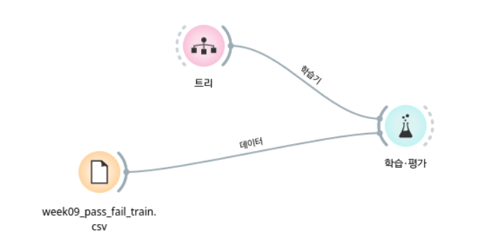
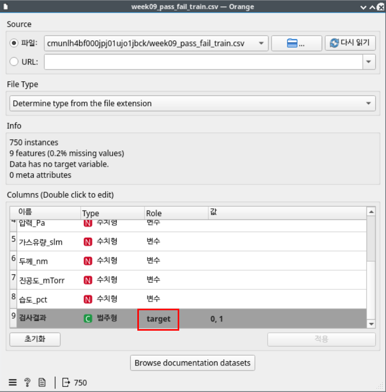
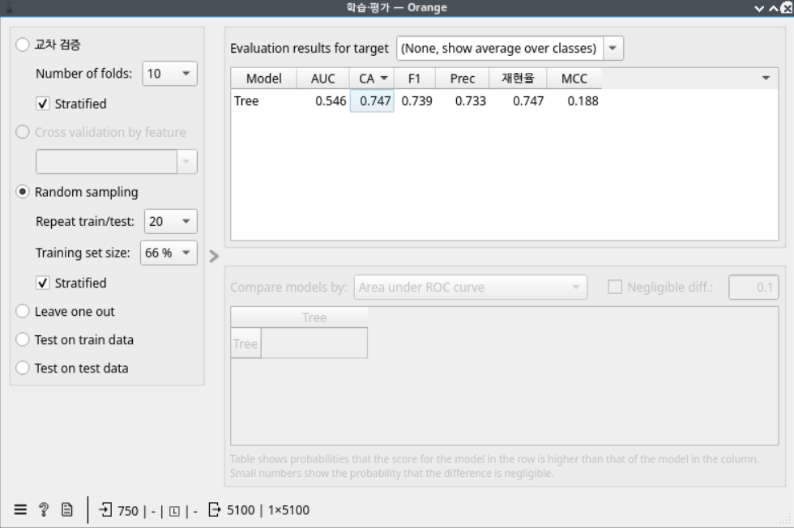

머신러닝 예측 모델 만들기
오늘의 질문: "지난 기록만 보고, 아직 검사하지 않은 로트의 합격/불합격을 미리 맞힐 수 있을까?"
- 쉬운 예제: 야외 수업 기록
- 116일
- 쉬운 예제 모델 정확도
- 91.7%
- 반도체: 지난 로트 기록
- 735건
- 반도체: 합격 / 불합격
- 582 / 153
오늘의 학습 목표
규칙을 스스로 찾는 머신러닝
연습문제로 배우고 모의고사로 채점
정확도와 혼동행렬 읽기
- Feature(문제)와 Label(정답)을 나누고, train/test로 나눠 결정트리를 학습시킬 수 있다.
- 정확도를 "무조건 한쪽" 찍기와 비교하고, 혼동행렬 네 칸을 공장 말로 읽을 수 있다.
- 예측이 잘 맞아도 원인을 안다는 뜻은 아니라는 점을 "원인 후보"로 설명할 수 있다.
왜 이걸 배워야 할까?
- 지금까지는 끝난 기록으로 "어디서 불합격이 많았나"를 설명했다.
- 검사 전에 "이 로트는 불합격일 것 같다"를 알면 다음 공정으로 보내기 전에 막을 수 있다.
- 일기예보가 잘 맞아도 비가 오는 이유를 다 아는 것은 아니듯, 맞히는 것과 원인을 아는 것은 다르다.
지난 시간 복습
- 3차시: 사람이 규칙을 썼다 —
if 295 <= temp <= 305:이면 합격. - 8차시: 진공도가 범위를 벗어난 기록에 불합격이 많았지만 "원인"이 아니라 "원인 후보"라고 불렀다.
- 오늘: 규칙을 컴퓨터가 지난 기록에서 스스로 찾게 한다.
머신러닝 개념 이해하기
- 머신러닝: 지난 기록(문제+정답)을 주면 컴퓨터가 규칙을 찾고, 그 규칙으로 새 문제의 답을 예측한다.
- 생활 예: 지난 날씨와 "야외 체육 수업을 했나"의 기록으로 "내일 수업을 할 수 있을까"를 맞힌다. 오늘은 이 쉬운 예제로 먼저 따라 하고 반도체 데이터에 적용한다.
오늘은 앞의 두 칸과 "규칙이 얼마나 맞나 채점하기"까지 한다. 새 로트 예측은 10차시에 한다.
Feature(문제)와 Label(정답)
- Feature = 문제지(예측할 때 보는 단서), Label = 답안지(맞히고 싶은 값).
- 지난 기록에는 둘 다 있고, 새 로트에는 문제지만 있다.
쉬운 예제 — 야외 체육 수업 기록
week09_easy_outdoor_class.csv: 한 학교의 120일 날씨와 수업 결과(한 행 = 하루). 연습용으로 만든 가상 데이터다.
| 열 이름 | 뜻 | 역할 |
|---|---|---|
날짜 | 기록한 날 | 쓰지 않음 |
최고기온_섭씨 | 그날 최고기온(℃) | Feature |
습도_pct | 습도(%) | Feature |
풍속_m_s | 바람 세기(m/s) | Feature |
강수량_mm | 내린 비의 양(0 = 비 없음) | Feature |
진행여부 | 1 = 진행, -1 = 취소 | Label |
반도체 데이터의 열
week09_pass_fail_train.csv: 한 행 = 로트 1건의 공정 조건과 최종 검사 결과.
| 열 이름 | 공장에서 뜻하는 것 | 역할 |
|---|---|---|
공정명, 설비번호 | 어떤 작업을 어느 기계에서 했는지 | 쓰지 않음(글자 열) |
온도_섭씨 | 설비 안의 온도 | Feature |
압력_Pa | 설비 안의 압력(가상 값이라 크기는 해석하지 않음) | Feature |
가스유량_slm | 흘려 넣은 가스의 양 | Feature |
두께_nm | 웨이퍼 위에 남은 막의 두께 | Feature |
진공도_mTorr | 설비 안에 남은 공기의 압력. 값이 작을수록 공기를 많이 뺀 것(8차시) | Feature |
습도_pct | 클린룸 공기의 습도 | Feature |
합격여부 | 1 = 합격, -1 = 불합격 | Label |
합격여부는 1~8차시와 같이 1 = 합격, -1 = 불합격, 진행여부는 1 = 진행, -1 = 취소다. 0은 쓰지 않는다.
왜 여러 Feature를 함께 넣을까
병원에서 체온만 보지 않듯, 모델에도 Feature를 여러 개 넣는다. 반도체 데이터에서도 그런지는 아래 "반도체 데이터로 확인하기"에서 본다.
결정트리 — 스무고개로 규칙 찾기
- 결정트리는 "○○가 기준값 이하인가?"를 이어 물어 기록을 갈래로 나누고, 마지막 갈래에 많은 쪽으로 답한다.
- 어떤 열로, 어떤 기준값으로 물을지는 모델이 기록을 보고 고른다. 이것이 "학습"이다.
쉬운 예제 — 야외 수업 모델이 찾은 질문
| 질문(학습용 92일) | 예 | 아니오 |
|---|---|---|
| 1. 강수량이 4.75mm 이하인가? | 질문 2로 | 취소(17일 모두 취소) |
| 2. 최고기온이 31.75℃ 이하인가? | 질문 3으로 | 취소(5일 모두 취소) |
| 3. 풍속이 9.9m/s 이하인가? | 질문 4로 | 취소(1일) |
| 4. 강수량이 1.0mm 이하인가? | 진행(61일 중 취소 1일) | 진행(약한 비, 8일 중 3일 취소) |
"비·더위·바람이면 취소"를 모델이 스스로 찾았다. 습도_pct(관계없게 만든 비교용 열)는 질문에 쓰이지 않았다.
4번 질문은 두 갈래 모두 진행이 많아 답은 같지만, 약한 비 갈래는 8일 중 3일이 취소라 덜 확실하다(10차시 "확률"에서 다시 본다).
max_depth=4는 "질문은 최대 4번"이라는 뜻이다. 너무 많이 허락하면 기록을 외워 버릴 수 있다.
연습문제와 모의고사 — train/test 나누기
- train = 연습문제(80%): 모델이 보고 규칙을 찾는 기록. test = 모의고사(20%): 한 번도 보지 않은 기록으로 채점한다.
- 기출문제 답만 외운 학생은 같은 문제집에서 100점이지만 처음 보는 모의고사에서는 떨어진다. 실력은 모의고사로 잰다.
| 옵션 | 뜻 |
|---|---|
test_size=0.2 | 20%를 모의고사로 떼어 둔다 |
random_state=42 | 섞는 방식을 고정해 강의와 같은 숫자가 나온다 |
stratify=y | 양쪽의 정답 비율(진행:취소, 합격:불합격)을 거의 같게 맞춘다 |
정확도와 혼동행렬 — 채점표 천천히 읽기
- 정확도 = 맞힌 개수 ÷ 전체 개수. 쉬운 예제 모의고사 24일 중 22일 → 91.7%.
- "무조건 한쪽" 찍기: 24일 중 진행이 17일이라 모두 "진행"으로 찍어도 70.8%다. 정확도는 항상 이 찍기 점수와 나란히 본다.
혼동행렬은 실제 정답과 예측을 짝지어 네 칸으로 센 표다(쉬운 예제 모델).
| 예측: 진행(1) | 예측: 취소(-1) | |
|---|---|---|
| 실제: 진행(1) | 16일 — 맞힘 | 1일 — 헛경보(수업 한 번을 괜히 놓침, 4월 14일) |
| 실제: 취소(-1) | 1일 — 놓침(강풍 9.2m/s인데 진행 예측, 4월 11일). 가장 곤란한 칸 | 6일 — 잡아냄 |
① Orange3로 먼저 훑어보기
- 파일(File):
week09_pass_fail_train.csv를 열고합격여부를 유형 범주형(categorical), 역할 목표(target)로 바꾼 뒤 적용(Apply). - 트리(Tree)를 연결하고, 파일과 트리를 모두 학습·평가(Test and Score)에 연결한다. CA 열이 정확도다.
위젯이 처음이라면 → 부록: Orange3 시작하기
실제 Orange3 화면으로 확인하기



- Orange3는
공정명·설비번호까지 쓰고 빈칸 행도 지우지 않으며, 트리 기본 깊이가max_depth=4와 다르다. - 학습·평가는 여러 번 나눠 채점한 평균이다(그림 9-3은 Random sampling 20회, 66% 학습). 우리 코드는 한 번만 나눈다.
② 파이썬으로 확인하기 — 데이터 준비와 학습
easy_를 붙였다. 반도체 실습(실습지·노트북 9~12단계)에서는 easy_를 떼고 파일·열 이름만 바꾼다.
데이터 읽고 빈칸 정리하기(5차시 복습)
import pandas as pd
easy_df = pd.read_csv("../../data/weekly/week09/week09_easy_outdoor_class.csv", encoding="utf-8-sig")
print(easy_df.shape)
print(easy_df.head())
print(easy_df.isna().sum())
easy_df = easy_df.dropna()
print(easy_df.shape)(120, 6)
날짜 최고기온_섭씨 습도_pct 풍속_m_s 강수량_mm 진행여부
0 2024-04-01 18.2 43.0 1.4 0.0 1
1 2024-04-02 16.7 62.0 2.7 8.2 -1
2 2024-04-03 14.3 60.0 6.4 0.0 1
3 2024-04-04 17.3 72.0 3.9 0.0 -1
4 2024-04-05 16.8 89.0 2.0 7.9 -1
날짜 0
최고기온_섭씨 1
습도_pct 2
풍속_m_s 1
강수량_mm 0
진행여부 0
dtype: int64
(116, 6)
빈칸이 있는 4일을 지워 116일이 남았다.
Feature(문제)와 Label(정답) 나누기
easy_feature_cols = ["최고기온_섭씨", "습도_pct", "풍속_m_s", "강수량_mm"]
easy_X = easy_df[easy_feature_cols] # Feature(문제): 날씨 4개
print(easy_X.shape)
easy_y = easy_df["진행여부"] # Label(정답): 1 = 진행, -1 = 취소
print(easy_y.value_counts())(116, 4) 진행여부 1 82 -1 34 Name: count, dtype: int64
문제는 대문자 X, 정답은 소문자 y에 담는다(관례). df[열 목록]은 4차시의 "여러 열 고르기"다.
연습문제(train)와 모의고사(test)로 나누기
from sklearn.model_selection import train_test_split
easy_X_train, easy_X_test, easy_y_train, easy_y_test = train_test_split(
easy_X, easy_y, test_size=0.2, random_state=42, stratify=easy_y
)
print(easy_X_train.shape, easy_X_test.shape)
print(easy_y_test.value_counts())(92, 4) (24, 4) 진행여부 1 17 -1 7 Name: count, dtype: int64
from 도구모음 import 기능은 큰 도구 상자(sklearn, 머신러닝 도구 모음)에서 필요한 도구 하나만 꺼내 오는 줄이다. 꺼낸 뒤에는 train_test_split(...)처럼 이름만으로 쓴다.
결과 네 덩어리(X_train, X_test, y_train, y_test)를 이 순서로 받는다.
결정트리 모델 학습시키기
from sklearn.tree import DecisionTreeClassifier
easy_model = DecisionTreeClassifier(max_depth=4, random_state=42)
easy_model.fit(easy_X_train, easy_y_train)DecisionTreeClassifier(max_depth=4, random_state=42)
fit(문제, 정답)이 학습이다. 표시된 한 줄은 오류가 아니라 학습한 모델의 설정이다.
③ 모의고사 채점하기 — 정확도와 혼동행렬
예측하고 정확도 구하기
from sklearn.metrics import accuracy_score
easy_pred = easy_model.predict(easy_X_test)
easy_accuracy = accuracy_score(easy_y_test, easy_pred)
print(f"모델 정확도: {easy_accuracy:.1%}")모델 정확도: 91.7%
predict는 문제만 주고 답을 예측하게 한다. :.1%는 0.917을 91.7%로 보여준다.
"무조건 한쪽" 찍기와 비교하기
easy_baseline = (easy_y_test == 1).mean()
print(f"무조건 '진행'이라고 찍었을 때 정확도: {easy_baseline:.1%}")무조건 '진행'이라고 찍었을 때 정확도: 70.8%
(조건).mean()은 True의 비율, 곧 진행(1)의 비율이다. 모델(22일)이 찍기(17일)보다 5일 더 맞혔다.
혼동행렬로 네 칸 나눠 보기
from sklearn.metrics import confusion_matrix
easy_cm = confusion_matrix(easy_y_test, easy_pred, labels=[1, -1])
print(easy_cm)[[16 1] [ 1 6]]
네 칸의 뜻은 위 "정확도와 혼동행렬" 표와 같다. 대각선(16 + 6 = 22일)이 맞힌 것이다.
[[6 1] [1 16]]이 된다. 항상 labels=[1, -1]을 붙인다.
④ 예측이 잘 맞아도 원인을 아는 것은 아니다 — 중요도
feature_importances_(중요도)는 각 열이 질문으로 쓰여 기록을 얼마나 잘 갈라 주었는지 나눠 가진 몫이다(합계 100%). 질문에 한 번도 안 쓰인 열은 0%다.
for name, importance in zip(easy_feature_cols, easy_model.feature_importances_):
print(f"{name}: {importance:.1%}")최고기온_섭씨: 24.8% 습도_pct: 0.0% 풍속_m_s: 5.4% 강수량_mm: 69.8%
zip(A, B)는 두 목록에서 같은 자리의 값을 한 쌍씩 꺼낸다(첫 쌍은 "최고기온_섭씨"와 약 0.248). for 뒤에 이름을 두 개 쓰면 한 쌍이 name과 importance에 하나씩 나뉘어 담긴다.
결과: 강수량이 기록을 가장 잘 갈랐고, 습도는 쓰이지 않았다.
반도체 데이터로 확인하기
쉬운 예제와 같은 순서로 반도체 기록 735건을 학습시킨 모델에서, 오늘의 질문에 답하는 핵심만 확인한다. 준비 코드(읽기·나누기·학습)는 실습지 문제 1~4에서 직접 쓴다.
| 바뀌는 것 | 쉬운 예제 | 반도체 |
|---|---|---|
| 파일 | week09_easy_outdoor_class.csv | week09_pass_fail_train.csv |
| 단서(Feature) | easy_feature_cols(날씨 4개) | feature_cols(공정 조건 6개, 위 "반도체 데이터의 열" 표) |
| 정답(Label) | "진행여부" | "합격여부" |
| 변수 이름 | easy_X_test, easy_model … | X_test, model …(easy_ 삭제) |
모델이 찾은 규칙 — 위쪽 질문 3개
학습용 588건 기준. 초록 = 불합격이 적은 갈래, 빨강 = 많은 갈래. 아래로 질문이 더 이어진다(최대 4번). 오른쪽 아래 53건은 진공도 값이 5.49를 넘어 정상 범위(4.5~5.5)를 벗어난, 공기가 덜 빠진 쪽이다.
확인 1. 모델은 "무조건 합격" 찍기보다 얼마나 나은가?
pred = model.predict(X_test)
accuracy = accuracy_score(y_test, pred)
print(f"모델 정확도: {accuracy:.1%}")
baseline = (y_test == 1).mean()
print(f"무조건 '합격'이라고 찍었을 때 정확도: {baseline:.1%}")모델 정확도: 80.3% 무조건 '합격'이라고 찍었을 때 정확도: 78.9%
공장 말로 읽기: 모의고사 147건 중 모델 118건, 찍기 116건 — 딱 2건 차이다(쉬운 예제는 5일 차이). 합격이 대부분인 데이터라 정확도 하나로는 판단하기 어렵다.
확인 2. 불량 로트를 몇 건 놓쳤나?
cm = confusion_matrix(y_test, pred, labels=[1, -1])
print(cm)[[109 7] [ 22 9]]
공장 말로 읽기: 109 = 합격을 맞힘, 7 = 헛경보, 22 = 불량을 합격으로 놓침(가장 위험), 9 = 불량을 잡아냄. 불합격 31건 중 22건을 놓쳐서, 아직 이 모델만 믿고 검사를 줄일 수는 없다.
확인 3. 무엇이 불합격의 원인 후보인가?
for name, importance in zip(feature_cols, model.feature_importances_):
print(f"{name}: {importance:.1%}")온도_섭씨: 48.8% 압력_Pa: 16.7% 가스유량_slm: 9.2% 두께_nm: 4.2% 진공도_mTorr: 21.1% 습도_pct: 0.0%
중요도만으로는 부족하다. 정상 범위 밖/안으로 나눈 불합격 비율(빈칸 정리 후 735건, 강사가 미리 센 값)과 함께 본다.
| 열(정상 범위) | 중요도 | 범위 밖 불합격 | 범위 안 불합격 |
|---|---|---|---|
| 온도(295~305℃) | 48.8% | 37.7%(239건) | 12.7%(496건) |
| 진공도(4.5~5.5 mTorr) | 21.1% | 40.4%(141건) | 16.2%(594건) |
| 가스유량(47~53 slm) | 9.2% | 20.3%(241건) | 21.1%(494건) |
- 공장 말로 읽기: 온도와 진공도는 중요도도 높고 범위 밖 불합격도 크게 높아 불합격의 원인 후보다. 확정하려면 조건을 바꿔 보는 실험이 필요하다.
- 가스유량은 중요도가 있어도 범위 밖·안 차이가 없어 후보로 올리지 않는다. 압력(16.7%)은 범위 비교를 하지 않아 판단을 보류한다.
- 두께 중요도는 4.2%로 낮다. 두께는 온도와 함께 오르내려서(오늘 데이터 상관계수 r = 0.81) 모델이 온도만 물어도 충분했기 때문이다. 그래서 "두께는 관계없다"고도, "온도가 원인"이라고도 이 기록만으로는 말할 수 없다.
- 여러 열 함께 보기: 온도가 범위 안이어도 진공도만 벗어난 95건은 불합격 32.6%, 둘 다 벗어나면 56.5%다(둘 다 안은 8.0%).
실습: 예측 모델 만들기 따라 하기
학생용 노트북 week09_student.ipynb와 실습지로 진행한다. 빈칸이 남으면 NameError나 AttributeError가 난다.
핵심 용어 카드
머신러닝
- 한 줄 설명
- 지난 기록(문제+정답)으로 컴퓨터가 규칙을 찾아 새 문제의 답을 예측하는 방법.
- 예
- 116일의 날씨로 수업 진행, 735건의 공정 조건으로 합격 여부를 맞힌다.
Feature / Label
- 한 줄 설명
- 예측할 때 보는 단서(문제지) / 맞히고 싶은 값(답안지).
- 예
- 공정 조건 6개 열(
X) /합격여부(y, 1 = 합격, -1 = 불합격).
train / test
- 한 줄 설명
- 기록을 연습문제(학습용)와 모의고사(채점용)로 나누는 것.
- 예
- 588건으로 학습, 147건으로 채점.
결정트리
- 한 줄 설명
- "○○가 기준값 이하인가?"를 이어 묻는 스무고개 모델.
- 예
- 첫 질문 "온도가 293.95℃ 이하인가?"
정확도
- 한 줄 설명
- 맞힌 개수 ÷ 전체 개수. 찍기 점수와 나란히 본다.
- 예
- 147건 중 118건 → 80.3%(찍기 78.9%).
혼동행렬
- 한 줄 설명
- 실제 정답(줄)과 예측(칸)을 짝지어 센 네 칸 표.
- 예
[[109 7] [22 9]]— 불합격 31건 중 22건을 놓쳤다.
원인 후보
- 한 줄 설명
- 데이터로 보아 더 확인해 볼 대상. 범인이 아니라 용의자.
- 예
- 온도(중요도 48.8%, 범위 밖 불합격 37.7% vs 안 12.7%)·진공도(21.1%, 40.4% vs 16.2%).
데이터
- 쉬운 예제:
data/weekly/week09/week09_easy_outdoor_class.csv— 120행, 빈칸 정리 후 116행(진행 82, 취소 34). 생활 예제용 가상 데이터. - 반도체:
data/weekly/week09/week09_pass_fail_train.csv— 750행 9열, 빈칸 정리 후 735행(합격 582, 불합격 153). 교육용 가상 데이터다. 열 구조와 값 범위는 교육용 샘플 데이터를 참고해 만들었을 뿐이며, 값의 크기는 실제 공정 조건과 다르다(압력_Pa는 크기를 해석하지 않는다). - 정답 없는 새 로트 9건(
week09_new_lots_to_predict.csv)은 10차시에 예측한다. 자세한 설명: 데이터 설명서
주의할 점 & 자주 발생하는 오류
ValueError: could not convert string to float: '식각' — feature_cols에 숫자 열 6개만 넣는다.
ValueError: Number of labels=588 does not match number of samples=92 — 예: model.fit(easy_X_train, y_train). 반도체 셀에 easy_가 남지 않게 한다.
FileNotFoundError: [Errno 2] No such file or directory — week09_pass_fail_train.csv처럼 밑줄·숫자·.csv까지 정확히 쓴다.
NameError: name 'X_train' is not defined — 맨 위 셀부터 차례대로 다시 실행한다.
NotFittedError: This DecisionTreeClassifier instance is not fitted yet. — 학습 셀(노트북 4·10단계)을 먼저 실행한다.
dropna()를 건너뛰면 오류 없이 정확도 79.3%가 나온다(행 수 735 확인). 정답 열을 Feature에 넣으면 100.0%가 나온다(답안지를 본 것).
결과 정리 & 퀴즈
더 많은 문제는 실습지에 있다.
if 판정과 비교할 때, 머신러닝의 가장 큰 차이는?합격여부 열에서 -1의 뜻은?[[109 7] [22 9]]에서 공장에 가장 위험한 칸은?습도_pct의 중요도가 0.0%였다. 이것이 뜻하는 것은?AI로 한 걸음 더 — 질문하고 코드 받아보기
- "머신러닝과 사람이 직접 만든 if 규칙의 차이를 요리 레시피에 비유해서 설명해줘."
- "혼동행렬의 네 칸을 화재경보기에 비유해서 설명해줘. 어느 칸이 가장 위험한지도 알려줘."
- "연습문제로 채점하면 왜 실력이 부풀려 보이는지 시험공부에 비유해서 설명해줘."
ok_pass = cm[0][0] # 합격을 합격으로 맞힘
false_alarm = cm[0][1] # 합격인데 불합격으로 의심
missed = cm[1][0] # 불합격인데 합격으로 놓침
caught = cm[1][1] # 불합격을 불합격으로 잡아냄
print(f"실제 합격 {ok_pass + false_alarm}건 중 {ok_pass}건은 맞혔고, {false_alarm}건은 불합격으로 잘못 의심했습니다.")
print(f"실제 불합격 {missed + caught}건 중 {caught}건은 잡아냈고, {missed}건은 합격으로 놓쳤습니다.")실제 합격 116건 중 109건은 맞혔고, 7건은 불합격으로 잘못 의심했습니다. 실제 불합격 31건 중 9건은 잡아냈고, 22건은 합격으로 놓쳤습니다.
- 직접 실행해 혼동행렬 숫자(109·7·22·9)와 맞는지 확인한다.
cm[1][0]은 "1번 줄의 0번 칸"이다(2차시 인덱스). - AI에게도 "1 = 합격, -1 = 불합격, labels=[1, -1] 순서"를 알려 준다.
과제(다음 차시까지)
Jupyter Notebook 한 개에 순서대로 작성하고, 결과가 출력된 상태로 제출한다.
["온도_섭씨", "진공도_mTorr"] 두 열로 같은 방법으로 학습시키고, 정확도와 혼동행렬을 오늘 결과(6개 열)와 비교한다.
핵심 질문 → 데이터 연결
- 질문: 지난 기록만 보고, 아직 검사하지 않은 로트의 합격/불합격을 미리 맞힐 수 있을까?
- 답: 어느 정도는. 정확도 80.3%지만 찍기(78.9%)와 2건 차이이고 불합격 31건 중 22건을 놓쳤다(쉬운 예제는 찍기보다 5일 더 맞힘).
- 한 걸음 더: 온도·진공도는 불합격의 원인 후보다(중요도 48.8%·21.1%, 범위 밖 불합격 37.7%·40.4% vs 안 12.7%·16.2%).
다음 차시 예고
같은 모델(random_state=42)로 새 로트 9건의 합격/불합격을 예측하고, Orange3 Predictions 결과와 비교한다.